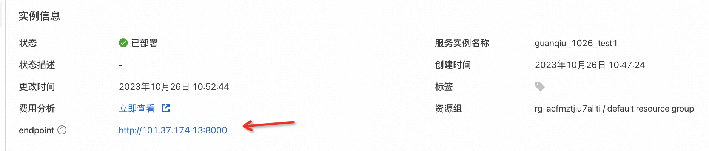

Hologres+PAI一键部署企业级问答知识库
背景信息
Hologres是阿里巴巴自研一站式实时数仓产品，不仅支持海量数据多维分析（OLAP）、高并发低延迟的在线数据服务（Serving），还与达摩院自研高性能向量计算软件库Proxima深度整合，支持高性能、低延时、简单易用的向量计算能力。详情请参见Proxima向量计算。 PAI-EAS是阿里云的模型在线服务平台，支持用户将模型一键部署为在线推理服务或AI-Web应用，可以一键部署LLM推理、AIGC等热门服务应用。PAI-EAS 适用于实时推理、近实时异步推理等多种AI推理场景，具备Serverless自动扩缩容和完整运维监控体系能力。 LangChain是一个开源框架，可以将大模型、向量数据库、定制语料结合，高效完成专属问答知识库的搭建。Hologres现已被LangChain作为向量数据库集成，详情请参见LangChain-Hologres。 计算巢服务是一个开放给服务商和用户的服务管理PaaS平台，为服务商和用户提供了高效、便捷、安全的服务使用体验，服务商能更好地在阿里云上部署、交付和管理服务，用户能集中管理在阿里云上订阅的各类服务商提供的服务。通过计算巢，可以一键完成问答知识库所需的硬件资源拉起与软件资源部署。
前提条件
如果您使用RAM用户进行知识库搭建，需要通过主账号授予相应资源权限，需要的权限及授权方式请参见为RAM用户（子账号）授权。
创建服务实例
-
点击创建Hologres+PAI 5分钟一键部署企业级问答知识库服务实例。
-
在创建服务实例页，配置以下字段
模块 参数 说明 服务实例名称 计算巢服务实例名称 地域 Hologres、PAI-EAS、ECS实例所在地域 付费类型配置 付费类型 ECS和Hologres的计费方式，支持按量付费或包年包月PAI-EAS实例只支持按量付费 ECS实例配置 实例类型 ECS实例规格 实例密码 ECS实例登录密码 Hologres实例配置 实例规格 Hologres计算资源规格Hologres存储资源默认为按量付费，推荐您根据业务数据量，购买合适的存储抵扣包 PAI-EAS模型配置 选择大模型 您希望部署的LLM大模型 PAI实例规格 PAI-EAS实例规格 VPC配置 交换机可用区 交换机所在可用区 是否新建VPC 专有网络 专有网络VPC实例ID或专有网络IPv4网段 交换机 交换机实例ID或交换机子网网段 标签和资源组 标签 服务实例需要绑定的标签 资源组 服务实例所属的资源组 -
点击下一步：确认订单
- 查看订单页，确保依赖检查全部正常，点击立即创建
- 创建“Hologres+PAI一键部署企业级问答知识库”服务实例需耗时5-10分钟，您可以在服务实例管理中查看实例情况
知识库使用
- 进入计算巢服务实例管理页，点击已部署的服务实例ID，进入服务实例详情页
-
点击实例信息中的Endpoint链接，进入Hologres+大模型WebUI

-
在WebUI的设置页配置以下信息
- Embedding模型：默认选择text2vec-base-chinese模型
- PAI-EAS连接信息：已默认填写计算巢部署的PAI-EAS模型的VPC连接信息
- Hologres连接信息：
- 已默认填写计算巢部署的Hologres实例的VPC Host、Port、Database（chatbot）
- 需要您在User和Password中填入您的阿里云AccessKey ID和AccessKey Secret，可以在阿里云官网Access Key管理 查看。您也可以在Hologres中创建其他账号用于知识库搭建，详情请参见Hologres权限模型概述
- 点击连接Hologres，收到“连接 Hologres 成功”提示，即说明连接成功
-
在WebUI的上传页
- 上传您的专属语料数据。后台会对您的语料数据进行向量化处理并导入Hologres
- 收到“成功上传 x 个文件”提示，即说明数据处理完成
- 您可以在Hologres实例chatbot数据库下的langchain_demo表中查询您的语料数据
-
在WebUI的聊天页
- 选择聊天模式：
- 向量数据库：对您的提问，仅使用Hologres进行向量近似查询，返回top K结果
- 大语言模型：对您的提问，仅使用大模型直接进行回答
- 向量数据库+大语言模型：对您的提问，使用您已在Hologres中存储的语料数据进行向量近似查询，将结果对大模型进行提示词微调，最终使用大模型推理求解进行回答
- 选择最相关的k条语料：默认为3条
- 选择prompt模版：建议选择通用模版，您也可以自定义prompt模版
- 在提问框中输入您的问题，点击提交进行问答
至此，您已完成企业级问答知识库的调试。 您可以进一步使用PAI-EAS部署的大模型的调用信息（在PAI控制台-EAS实例详情页中查看），将知识库接入实际业务场景进行使用，如接入钉钉聊天群聊（参见使用Hologres和大模型免费定制专属聊天机器人）等。